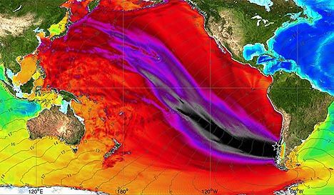
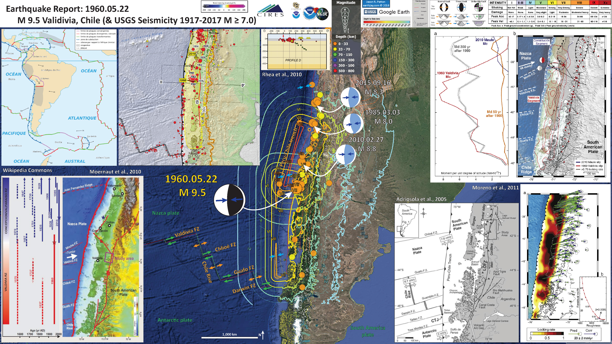
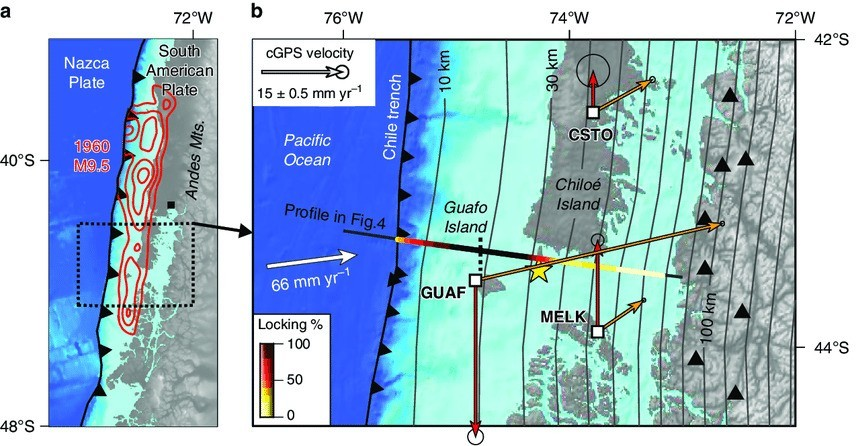
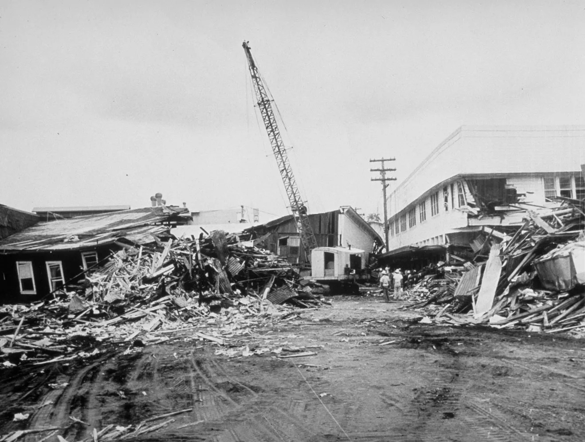

The Valdivia Earthquake was a 9.5 magnitude earthquake - the largest earthquake in the world.
The Valdivia Earthquake happened in Valdivia, Chile, on May 22, 1960, 2:11:20 p.m. EST (19:11:20 local). It was preceded by 4 foreshocks, each bigger than 7.0 magnitude, with the biggest reaching 7.9 magnitude.
The 1960 Valdivia earthquake fundamentally reshaped Chile’s national identity and global safety standards. It catalyzed the development of some of the world's strictest building codes, transforming Chile into a resilient "seismic culture" where disaster preparedness is a core societal value. Historically, the disaster’s reach extended far beyond South America, prompting the United Nations to establish the Pacific Tsunami Warning System to prevent future global casualties. Locally, the event altered the landscape forever; land subsidence created the Carlos Anwandter Nature Sanctuary, turning former farmland into a protected wetland ecosystem that remains a major ecological site today.
The Valdivia Earthquake occurred along the southern segment of the Peru–Chile Trench, where the Nazca Plate is being subducted beneath the South American Plate. This is a convergent plate boundary, meaning the two plates move toward each other. The Nazca Plate moves eastward at about 7–8 cm per year, sliding beneath the overriding South American Plate. This type of boundary generates megathrust earthquakes, which are the largest earthquakes on Earth. The earthquake’s massive magnitude (9.5) was caused by sudden rupture along a large portion of the plate interface, releasing decades of accumulated strain. Subduction zones like this also produce tsunamis, which is why the Valdivia Earthquake generated a devastating 25-meter wave that affected coastal areas across the Pacific.
The Valdivia Earthquake caused catastrophic destruction across southern Chile. It resulted in 4,655 casualties, including 1,655 deaths, 3,000 injuries, and 32 people reported missing. The earthquake triggered a massive 25-meter tsunami that devastated coastal towns and carried destruction across the Pacific Ocean. Entire neighborhoods were flattened, roads and bridges were destroyed, and vital infrastructure such as hospitals, schools, and ports suffered severe damage. The total economic loss was estimated at $675,500,000, making it one of the costliest natural disasters of the 20th century. Its effects were so powerful that the tremors were felt as far away as North America and Asia, highlighting the immense scale of the disaster.
An educational video about the Valdivia Earthquake:
The following links provide additional information on earthquakes, tsunamis, and related geological info.
The following sources were used for research and verification of information on this site.